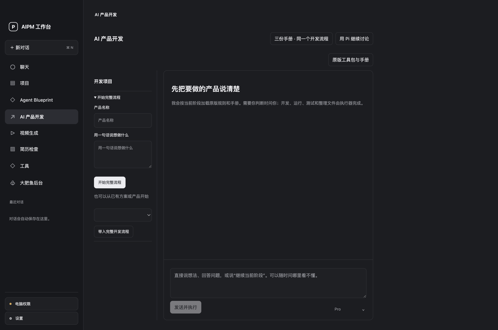

让修改接得上结果
视频曾被拆成两个制作区域，聊天和预览彼此分离。现在同项目内讨论、编辑分镜、内嵌播放与导出版本。
同一项目 · 持久会话 · 版本保留AN ORIGINAL PRODUCT BY ZHANG JUNHAO
面向 AI 产品经理的个人 Agent 工作台。
用对话推进开发、调研与创作，在本机看清过程，
检查结果，再继续往前做。

实际界面截图 · 独立演示工作区
从产品问题出发，
把 AI 的执行能力组织成日常工作。
BUILT AROUND REAL TASKS
产品想法、拜访准备、内容制作。
每项任务都需要能继续修改的实际产物。
从想法或现有 PRD 开始，逐步核对需求、确定技术方案，推进后端、前端与部署准备。每个阶段都保留产物和未决问题。

实际界面 · 空白演示项目，不触发付费模型
PRODUCT THINKING, MADE VISIBLE
视频曾被拆成两个制作区域，聊天和预览彼此分离。现在同项目内讨论、编辑分镜、内嵌播放与导出版本。
同一项目 · 持久会话 · 版本保留以 Harness 管理会话、工具、权限和任务限制。用户能看到当前状态，按需展开记录，并停止或确认操作。
宿主管理 · 人工确认 · 可停止文件生成、运行成功与用户满意分别判断。开发查看证据，调研核对来源，视频检查关键帧和实际播放效果。
执行结果 · 产物质量 · 用户验收AN APPLICATION BUILT WITH A HARNESS
Pi 提供 Agent 执行框架。
AIPM 组织产品流程、控制和结果展示。
我主导需求选择、工作台信息架构与交互，通过 AI 辅助开发实现宿主控制及业务适配，将公开的执行框架和专用工具组织为个人产品。
开源组件各自保留来源和许可证。主聊天与专用开发流程的阶段状态仍分别管理，电脑操作也取决于系统授权和目标应用支持。
沿着代码看架构 ↗EVIDENCE BEFORE CLAIMS
当前是可运行的个人 macOS 项目。
持续用真实任务验证，并保留尚未完成的部分。
从实际使用反馈形成需求和验收条件。
评测方案初稿，用例尚未全部执行。
模拟接口、本地文件与真实模型表现分别记录。
验证文档列明本轮实际执行范围和仍需配置的资源。
DESIGNED & BUILT BY ZHANG JUNHAO
欢迎从产品问题、设计取舍与技术实现开始交流。